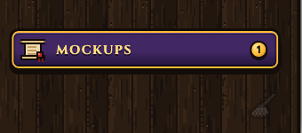
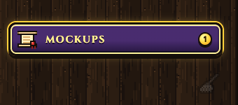
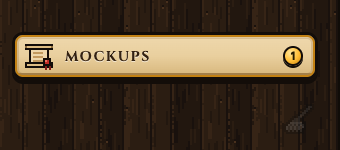
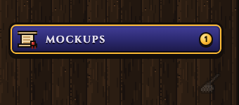
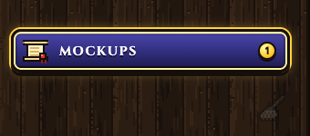

v5: the plaque is the tab. Click it and the Mockups screen shows in the page area, with no extra Mockups row in your tabs. While you are in Mockups the plaque is lit, like a picked tab. Click any tab to go back; click the plaque again and Mockups is where you left it, same project, same sheet. And the colour: three to pick from below, each in a real Samara tray at the new size, bottom of the tray above the broom.
Each pair: on the left you are on a tab (the plaque rests); on the right you are in Mockups (the plaque is lit, no tab is picked). The gold gem is a sheet you have not opened yet.


Samara's own plum (the address bar keys, the UPDATE key), gold trim, gold lettering.

The plan card's paper with dark ink and a gold frame, the same paper as the tab you are on.


Not FFX's bright blue: the indigo of Samara's own ink and the TABS mask, down to Samara's near-black ink, gold trim.
v4: a plain way out. Back to Samara sits first along the top of Mockups, in the scroll's own blue and gold; it takes you back to the tab you were on. Esc does the same, and so does any tab in your tray (section 2b).
v3: one Mockups entry in your left tray, the sealed scroll, in three colours. One way in: Mockups, a single tab in your trail. Inside, a tab for each project with its logo, topics as sub headings, a Done section in every project, and the sheet itself opens right there at its true size. The old mockup list in the trail goes.
Your picks: one entry only, the sealed scroll, and it doesn't have to be brown. It opens the Mockups menu below; nothing else leads there. Three colourways from the things you like: Samara's plum keys, the plan card's parchment, and FFX's deep blue menus, each trimmed in gold.
1 · Plum, like Samara's keys
The same purple as the address bar keys and the UPDATE key, gold trim, the scroll lit gold.
2 · Parchment, like the plan card
The plan card's paper with dark ink lettering and a gold frame: it reads as "the papers".
3 · FFX blue
The deep blue of Final Fantasy X's menus, white lettering, a gold frame.
Click a project tab. Its topics are the sub headings; built and parked sheets fold into Done at the bottom of that project. Pick a sheet and it opens on the right, at its true size, with its versions and its mark. Back returns to where you were.
Back to Samara leaves Mockups and puts you on the tab you were on before you came in (a new tab if that one is gone). Esc leaves too, unless a sheet's own menu is open. Clicking any tab in your tray also leaves. The small "◀ Notices" inside a sheet is different: it only closes the sheet and stays in Mockups.
When Claude sends you a sheet, Mockups opens right on it, in its project's tab, marked NEW. It's filed by the project its file lives in (Samara's and Aang's both live in the AiVatar repo, so Claude names which one; Waymark and Couch Mode by their own folders). A project Mockups hasn't seen before gets its own tab and logo on the spot.
| Today | After |
|---|---|
| 91 twice: "The cat, Jiji style" and "Jiji cat page" | One sheet 91, two versions |
| 92 twice (notices, samara-notices) and 98 twice (top bar, samara-notices) | One each, under Samara · Notices |
| 97 twice and 99 three times, with "(v2)" and "(v3)" in their names | One sheet each; the versions are its versions |
| Waymark's 75 to 79 clash with Samara's 75 to 79 | Each project numbers its own: W75, C06... |
| "Mac home", "aang-marks" filed under Samara or AiVatar Fixes | Under Aang |
| Topics used as projects (Samara, Live pages, AiVatar Fixes) | Projects are only real projects; topics live inside them |